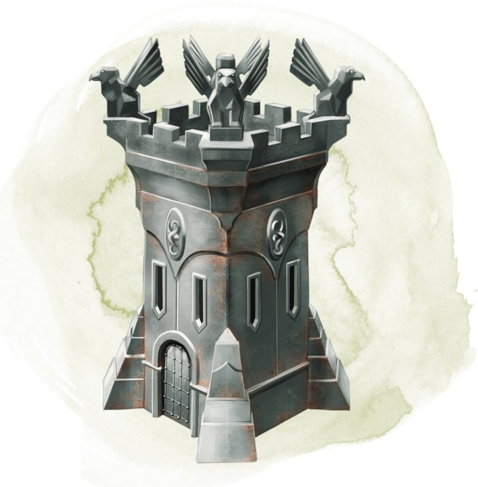

Forteresse instantanée de Daern
Objet merveilleux, rare
Vous pouvez utiliser une action pour poser sur le sol ce cube métallique de 2,50 centimètres d'arête et prononcer le mot de commande. Le cube grandit rapidement jusqu'à prendre la forme d'une forteresse qui reste en place jusqu'à ce que vous utilisiez une action pour prononcer le mot de commande qui l'annule (mot de commande qui ne fonctionne que lorsque la forteresse est vide).
La forteresse est une tour carrée de 6 mètres de côté et de 9 mètres de haut, qui possède des meurtrières sur chacune de ses faces et des créneaux à son sommet. Son intérieur est divisé en deux niveaux, reliés par une échelle qui court le long d'un mur. L'échelle se termine au niveau d'une trappe donnant sur le toit. Lorsqu'elle est activée, la tour possède une porte sur le mur qui vous fait face. La porte ne s'ouvre que sur votre demande, ce qui vous prend une action bonus. Elle est immunisée au sort déblocage ou à toute autre magie similaire, comme un carillon d'ouverture.
Chaque créature présente dans la zone où la forteresse apparaît doit effectuer un jet de sauvegarde de Dextérité DD 15, subissant 10d10 dégâts contondants en cas d'échec, ou la moitié de ces dégâts en cas de réussite.
Dans les deux cas, la créature est repoussée dans un espace inoccupé en dehors, mais à côté, de la forteresse. Les objets dans la zone qui ne sont pas portés ni transportés subissent ces dégâts et sont repoussés automatiquement.
La tour est faite en adamantium, et sa magie l'empêche d'être renversée. Le toit, la porte, et les murs ont chacun 100 points de vie, une immunité aux dégâts des armes non magiques à l'exception des armes de siège, et la résistance à tous les autres types de dégâts. Seul un sort de souhait peut réparer la forteresse (cette utilisation du sort compte comme une imitation d'un sort de niveau 8 ou supérieur). Chaque sort de souhait lancé rend 50 points de vie à un mur, au toit, ou à la porte.
La forteresse est une tour carrée de 6 mètres de côté et de 9 mètres de haut, qui possède des meurtrières sur chacune de ses faces et des créneaux à son sommet. Son intérieur est divisé en deux niveaux, reliés par une échelle qui court le long d'un mur. L'échelle se termine au niveau d'une trappe donnant sur le toit. Lorsqu'elle est activée, la tour possède une porte sur le mur qui vous fait face. La porte ne s'ouvre que sur votre demande, ce qui vous prend une action bonus. Elle est immunisée au sort déblocage ou à toute autre magie similaire, comme un carillon d'ouverture.
Chaque créature présente dans la zone où la forteresse apparaît doit effectuer un jet de sauvegarde de Dextérité DD 15, subissant 10d10 dégâts contondants en cas d'échec, ou la moitié de ces dégâts en cas de réussite.
Dans les deux cas, la créature est repoussée dans un espace inoccupé en dehors, mais à côté, de la forteresse. Les objets dans la zone qui ne sont pas portés ni transportés subissent ces dégâts et sont repoussés automatiquement.
La tour est faite en adamantium, et sa magie l'empêche d'être renversée. Le toit, la porte, et les murs ont chacun 100 points de vie, une immunité aux dégâts des armes non magiques à l'exception des armes de siège, et la résistance à tous les autres types de dégâts. Seul un sort de souhait peut réparer la forteresse (cette utilisation du sort compte comme une imitation d'un sort de niveau 8 ou supérieur). Chaque sort de souhait lancé rend 50 points de vie à un mur, au toit, ou à la porte.
Dungeon Master´s Guide (SRD)
